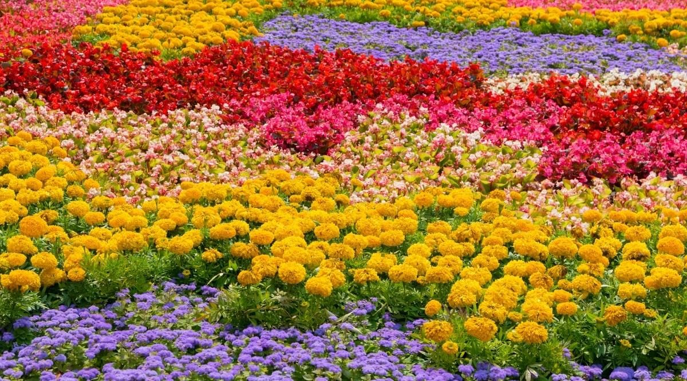

Flowers
In general, foliage plants grow best between 22 degrees and 27 degrees C, Most flowering plants prefer the same daytime temperature range, but grow best when nighttime temperatures range from 13 degrees to 16 degrees C. Ideal NPK fertilizer ratio of those nutrients for flowering plants is 3-1-2. Phosphorous helps root develop which helps flowers grow later on.